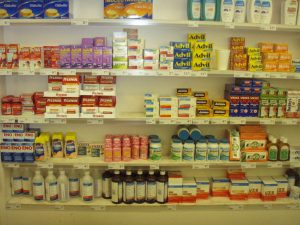
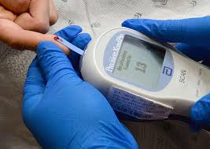
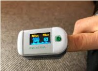
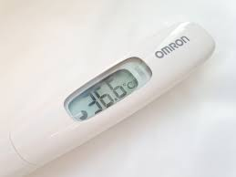
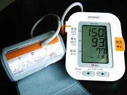

What should we do when we run out of prescription refills or have an infection, but we’re too afraid to go to the doctor’s office? If this happens, here are a few alternatives that are worth considering.
1. Telemedicine Service
Check your health insurance plan for telemedicine services. Because of the COVID-19 pandemic, most health insurance companies cover this service. You can call your doctor for a prescription refill or for a new prescription for a new diagnosis. Make sure you provide your pharmacy store information for electronic prescription transfer. Alternatively, if your doctor cannot be reached right away, your insurance company may have an assigned telemedicine provider instead, for example,the Independence Blue Cross uses MDLIVE as their telemedicine provider. I used it once to treat a toothache. It was only a 5 minute phone conference with a doctor, and 5 minutes later, my antibiotic medicine was ready for pick up at my local pharmacy. National pharmacies like CVS, Walgreens, RiteAid, etc. also provide telemedicine service for minor illnesses. They provide prescription delivery as well.
2. Over-The-Counter Drugs (Therapy)

Stock up with common over-the-counter drugs or nutrition supplements, such as Tylenol, (don’t choose Advil because of its active ingredient ibuprofen, which may have a negative effect on COVID-19 recovery), Mucinex, Benadryl, Pepto-Bismol，first aid kits, vitamin C, D, or E supplements, zinc, pedialytes, Gatorade, etc. Tylenol helps reduce fever or pain. Mucinex is a cough medicine that can suppress coughs and loosens mucus. Benadryl is an over-the-counter allergy medicine, commonly used by people during allergy season. Pepto-Bismol is an anti-diarrheal medicine. Severe diarrhea can cause dehydration and electrolytes imbalance. Vitamin C, D, E, and zinc are the nutrition supplements that help boost the immune system against COVID-19 infection. Pedialytes and Gatorade are beverages used to replenish fluid and electrolytes loss as a result of nausea, vomiting and diarrhea. Please read the instructions carefully before using any of these over-the-counter medicines, and consult your doctor for any side effects. Read my previous post about how to improve immunity in COVID-19 pandemic.
3. Medical Devices




Make sure your health management medical devices are available for different health purposes. If you have high blood pressure, have your blood pressure monitor nearby, so you can use it whenever. If you have high blood sugar, have your blood glucose test kit available to keep your blood sugar in check. If you are insulin dependent, make sure your insulin prescription refills are available. I believe most families have thermometers at Home, especially families with children. Add the thermometer on your shopping list if you happen to not have a thermometer or your thermometer is not working appropriately. Another helpful devices is the oxygen saturation monitor which is used to monitor your blood oxygen saturation. In the worst-case scenario, if you get infected with COVID-19, but the symptoms are not severe enough for you to visit the hospital, it is really important to keep monitoring your blood oxygen level. If you are suffering with difficulty breathing and low blood oxygen levels (that fall below the normal pulse oximeter reading range of 95-100%), contact your doctor immediately for medical advice.
As long as you are adequately equipped with the appropriate medical devices and health knowledge, you won’t feel lost when help cannot be reached immediately. Recognizing and taking advantage of available alternatives and opportunities can save your life or your family’s.